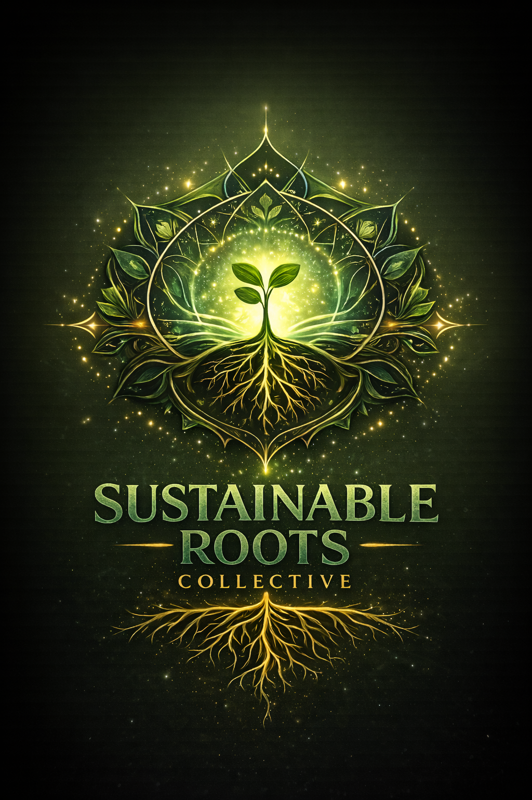

Sunflower
Crunchy, nutty, and hearty. Great for sandwiches, wraps, and snack boxes.
Fresh, small-batch microgreens grown for local homes, chefs, and community buyers in the Muskegon area.
Local pickup, chef inquiries, and market updates — all in one rooted, luminous home.

We grow vibrant microgreens chosen for flavor, freshness, and everyday use — from sandwiches and smoothies to chef plating and market baskets.
Crunchy, nutty, and hearty. Great for sandwiches, wraps, and snack boxes.
Sweet, tender, and fresh. Perfect for salads, bowls, and quick sautéing.
Clean, mild, and versatile. An easy add-on for smoothies, salads, and meal prep.
Bold, crisp, and peppery. A favorite for sandwiches, tacos, eggs, and garnish.
A balanced mix with visual texture and fresh flavor for plating and elevated everyday meals.
Intentional small-batch growing leaves room for specialty offerings and fresh seasonal energy.
At Sustainable Roots Collective, good food should feel vibrant, local, and alive. These greens are grown in small batches, harvested for freshness, and shared close to home.
Whether you are feeding your household, plating in a professional kitchen, or stopping by a local market, there is a path for you here.
Add a simple burst of freshness to smoothies, sandwiches, wraps, eggs, salads, and bowls.
Microgreens that bring color, texture, and flavor to the plate — grown locally and supplied with care.
See what is fresh, where to find it, and when Sustainable Roots Collective will be popping up next.
Sustainable Roots Collective was built from a love of fresh food, meaningful work, and growing something real. This is not mass production. It is careful growing, vibrant harvests, and a commitment to bringing rooted nourishment into homes, kitchens, and community spaces across Muskegon.
Read the StoryBrowse the current lineup and decide what fits your kitchen or menu.
Join the weekly harvest, ask about chef supply, or follow market availability.
Keep fulfillment simple and fresh with a grounded local rhythm.
Best flavor, best texture, best vitality.
Want first access to fresh microgreens, restaurant availability, and market updates? Start with the weekly harvest list.